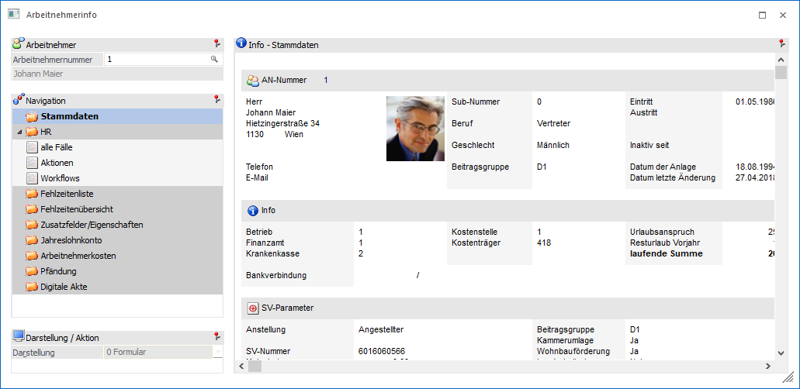
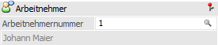
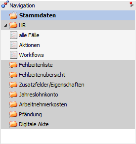
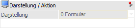
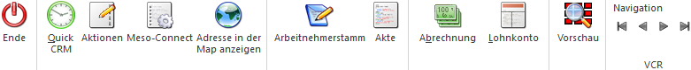
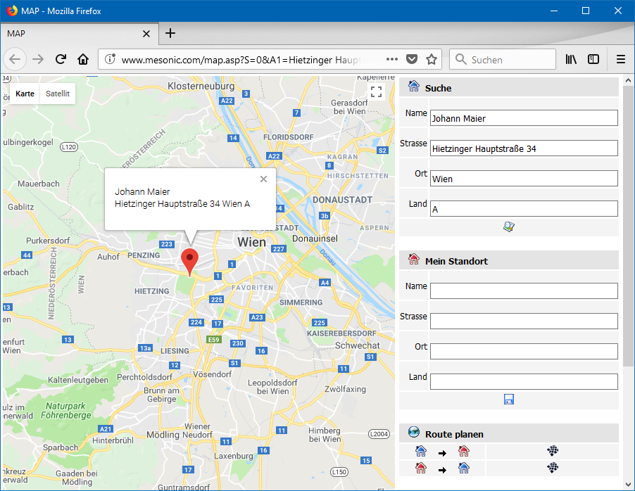

Die Arbeitnehmerinformation wird über den Menüpunkt…
1 WinLine INFO
1 Info
1 Arbeitnehmer
… aufgerufen und gibt alle Daten zum ausgewählten Arbeitnehmer aus.
Hinweis
Mittels Drag & Drop können in dieses Fenster auch neue Archiveinträge für den Arbeitnehmer hinzugefügt werden. Hierbei wird das Fenster "Neuer Archiveintrag" geöffnet und die Arbeitnehmernummer, die Lohn-Kostenstelle und der Mandant werden automatisch als Schlagwörter vorgeschlagen.
Achtung
Die Arbeitnehmerinfo steht nur in österreichischen Mandanten zur Verfügung, wobei die Prüfung über das Landeskennzeichen (WinLine FIBU-Parameter) erfolgt. Zusätzlich muss der Benutzer über die Berechtigung verfügen in die Lohnverrechnung einzusteigen zu dürfen.
In Mandanten mit Landeskennzeichen "Deutschland" wird bei Anwahl der Arbeitnehmerinformation automatisch die Mitarbeiterinformation geöffnet. Bei allen anderen Mandanten wird die Arbeitnehmerinfo nicht gestartet.

Arbeitnehmer

Ø Arbeitnehmernummer
An dieser Stelle wird die Arbeitnehmernummer eingetragen, welche in der Folge betrachtet werden soll. Für die Suche steht neben dem Matchcode auch die Autovervollständigung zur Verfügung.
Hinweis
Ist bei dem WinLine Benutzer eine Mitarbeiter-/Arbeitnehmernummer hinterlegt, so wird diese automatisch vorgeschlagen.
Ø Name
Unterhalb der Arbeitnehmernummer wird der Name des Arbeitnehmers angezeigt.
Navigation

Ø Navigation
Im linken Teil des Fensters befindet sich die Navigation, in welcher alle auszuwertenden Teilbereiche mit deren Unteransichten aufgelistet werden. Die Standardansicht wird hierbei in Fettschrift dargestellt und automatisch beim Öffnen der Info geladen (eine Änderung des Standards ist mit Hilfe der rechten Maustaste möglich).
Folgende Bereiche, welche in den nachfolgenden Kapiteln detailliert erläutert werden, stehen hierbei zur Verfügung:
ü Bereich "Fehlzeitenübersicht" (nur LOHN Österreich)
ü Bereich "Zusatzfelder/Eigenschaften"
ü Bereich "Arbeitnehmerkosten"
ü Bereich "Bescheinigungen" (nur LOHN Deutschland)
Hinweis
Der Inhalt der Navigation kann mit Hilfe des Programms Einstellungen - Ansicht individuell gestaltet werden.
Ø rechte Maustaste
Wenn in der Navigation die rechte Maustaste gedrückt wird, so steht die folgenden Funktion zur Verfügung:
ü Standardansicht
Über das
Kontextmenü kann zusätzlich bestimmt werden, welcher Bereich bzw. welche Ansicht
als Standardansicht verwendet werden soll (d.h. welche Informationen nach
Bestätigen der Arbeitnehmernummer als erstes dargestellt werden sollen).
Dazu
muss der gewünschte Ordner bzw. Eintrag angewählt und über die rechte Maustaste
die Funktion "Standardansicht" angeklickt werden. Anschließend wird dieser
Eintrag in Fettschrift dargestellt.
Darstellung / Aktion

In dem Bereich "Darstellung / Aktion" kann die Darstellung des gewählten Info-Bereichs (siehe "Navigation") definiert werden. Zusätzlich werden hier die Aktionen (Sonderbuttons) der jeweiligen Anzeige zur Verfügung gestellt.
Ø Darstellung
An dieser Stelle kann mit Hilfe einer Auswahlliste gewählt werden, ob die Darstellung der gewünschten Informationen in Form eines Formulars oder einer Tabelle erfolgen soll. Die gewählte Darstellung wird pro Info-Bereich benutzerspezifisch gespeichert.
Buttons

Wenn aus der Arbeitnehmerinformation ein Programm des WinLine LOHNs mit Hilfe der folgenden Buttons geöffnet und dort die Arbeitnehmernummer nicht verändert wird, gelangt man bei deren Schließung automatisch wieder in die WinLine INFO zurück.
Ø Ende
Durch Anwahl des Buttons "Ende" bzw. der Taste ESC wird die Arbeitnehmerinformation beendet.
Ø Quick CRM
Wenn dieser Button angeklickt wird, kann ein CRM-Fall zu dem gerade angezeigten Arbeitnehmer erfasst werden. Voraussetzung dafür ist:
ü Es muss eine gültige CRM-Lizenz vorhanden sein.
ü Der Benutzer muss ein CRM-Benutzer sein.
ü Es müssen entsprechende CRM-Aktionen bzw. CRM-Workflows mit der Kennzeichnung "QUICK CRM" angelegt sein.
Hinweis
Es werden im WinLine Standard 9 CRM-Aktionen (CRM-Gruppe "100") mitgeliefert.
Ø Aktionen
Durch Anklicken des Buttons "Aktionen" wird ein Kontextmenü geöffnet, in dem verschiedene Aktionen zur Verfügung stehen, die für den Arbeitnehmer ausgeführt werden können.
Hinweis
Im Programm "Aktionen" (WinLine START - Parameter - Aktionen) können zu den jeweiligen Aktionen auch CRM-Aktionen bzw. CRM-Startpunkte definiert werden.
Die standardmäßig zur Verfügung stehenden Aktionen haben folgende Funktionen:
ü  eMail senden
eMail senden
Wenn beim Arbeitnehmer eine
E-Mail-Adresse hinterlegt ist, öffnet sich das Postausgangsbuch zum Erstellen
und Versenden von E-Mails.
ü Brief schreiben
Es wird das
Postausgangsbuch geöffnet, in dem ein Serien-Brief ausgegeben werden kann.
ü Telefon 1 anrufen
Wird diese Aktion
gewählt und ist beim entsprechenden Datensatz auch eine Telefonnummer
eingetragen, wird - sofern die entsprechenden Voraussetzungen vorhanden sind -
die Telefonnummer 1 gewählt.
Ø Meso-Connect
Durch Anklicken des Buttons "Meso-Connect" wird ein Kontextmenü geöffnet, in dem standardmäßig folgende "Meso-Connect"-Aktionen zur Verfügung stehen:
ü  Mail
Mail
An den Arbeitnehmer kann mit dieser
Aktion eine Mail geschickt werden. Es öffnet sich dazu das Meso-Connect-Mail
Fenster indem die Betreffzeile des Mails sowie ein Text angegeben werden kann.
Weiter besteht noch die Möglichkeit, ein Attachement anzuhängen. Voraussetzung
ist, dass bei den gewählten Datensätzen auch eine E-Mail-Adresse vorhanden
ist.
ü Kontakte
Mit dieser Aktion kann ein
Abgleich mit den Microsoft Outlook-Kontakten durchgeführt werden, wobei es 4
unterschiedliche Szenarien geben kann:
ü 1. Der Datensatz ist in Outlook noch nicht vorhanden. In diesem Fall wird der Kontakt neu angelegt.
ü 2. Der Datensatz ist in Outlook bereits vorhanden, in der WinLine wurde eine Änderung durchgeführt. In diesem Fall werden die veränderten Daten an Outlook übergeben.
ü 3. Der Datensatz ist in Outlook bereits vorhanden und wurde dort auch verändert. In diesem Fall werden die veränderten Daten in die WinLine übernommen.
ü 4. Der Datensatz ist in Outlook und in der WinLine bereits vorhanden und wurde auch in beiden bereits verändert. In diesem Fall erfolgt eine Frage, welche der Daten aktualisiert werden sollen.
ü  Excel
Excel
Damit wird das Programm Microsoft
Excel gestartet und der Arbeitnehmer mit den Spaltenüberschriften übergeben.
ü  Word
Word
Bei dieser Aktion wird Microsoft
Word gestartete und die Daten des Arbeitnehmers übergeben.
ü StarCalc
Sofern das Programm StarCalc
installiert ist, können die Daten in dieses Programm übergeben werden.
ü StarWrite
Sofern das Programm StarWrite
installiert ist, können die Daten in dieses Programm übergeben werden.
ü Wizard
Über diesen Eintrag kann der
MESO-Connect Wizard aufgerufen werden, mit dem neue Aktionen erstellt bzw.
bestehende Aktionen verändert werden können.
Ø Adresse in der Map anzeigen
Wenn dieser Button angeklickt wird, wird - sofern eine Internetverbindung vorhanden ist - eine Internetseite geöffnet, in welcher der Standort der gewählten Adresse angezeigt wird.

Hinweis
Wenn im Bereich "Mein Standort" die eigene Adresse eingegeben wird, dann kann auch die Route zum Ziel ermittelt und angezeigt werden. Die Speicherung des eigenen Standorts per Cookie ist auch möglich.
Ø Arbeitnehmerstamm
Durch Anklicken des Buttons wird der entsprechende Arbeitnehmer im Arbeitnehmer-Stamm im WinLine LOHN aufgerufen.
Ø Akte
Durch Anklicken des Buttons Akte wird das Fenster "Akte" geöffnet, wo Detailinformationen zu diesem Arbeitnehmer in Bezug auf andere Datenbereiche eingesehen werden können (nähere Information hierzu entnehmen Sie bitte dem Kapitel Akte).
Ø Abrechnung
Durch Anklicken des Buttons wird im WinLine LOHN die Abrechnung des Arbeitnehmers in der aktuellen Periode aufgerufen.
Ø Lohnkonto
Durch Anklicken des Buttons wird im WinLine LOHN das Jahreslohnkonto des Arbeitnehmers aufgerufen.
Ø Vorschau
Durch Anwahl des Buttons "Vorschau" kann die Vorschau für Archiveinträge aktiviert werden.
Ø VCR-Buttons
Über die so genannten VCR-Buttons kann durch Mausklick zwischen den Datensätzen geblättert werden.
ü Damit kann der erste Datensatz angesprochen werden.
ü  Damit kann der
vorherige Datensatz angesprochen werden.
Damit kann der
vorherige Datensatz angesprochen werden.
ü  Damit kann der
nächste Datensatz angesprochen werden.
Damit kann der
nächste Datensatz angesprochen werden.
ü  Damit kann der
letzte Datensatz angesprochen werden.
Damit kann der
letzte Datensatz angesprochen werden.